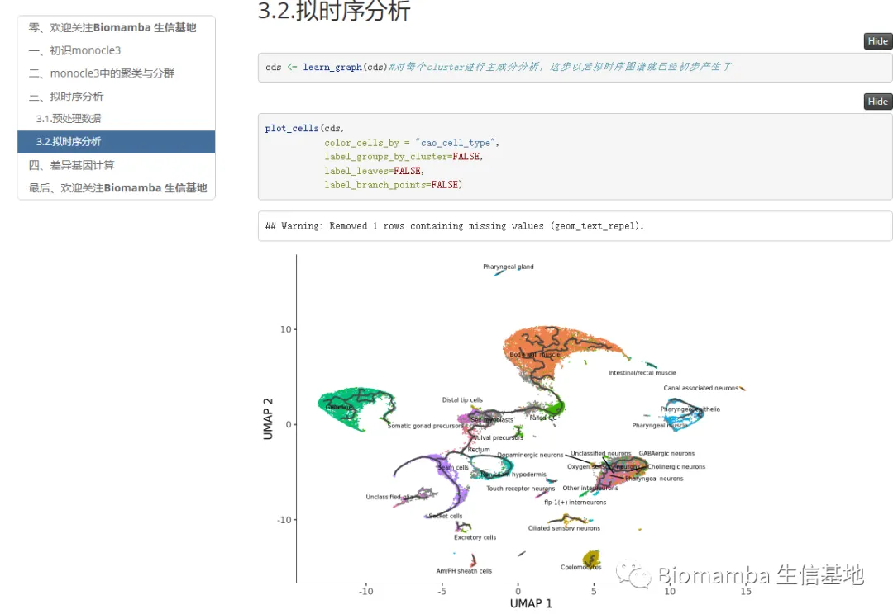
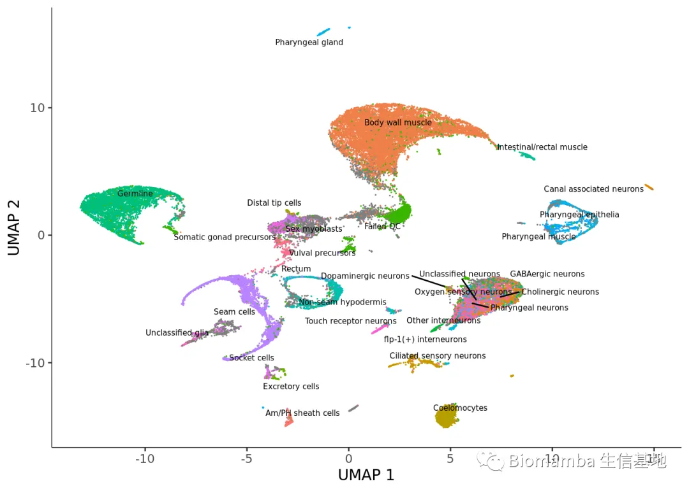
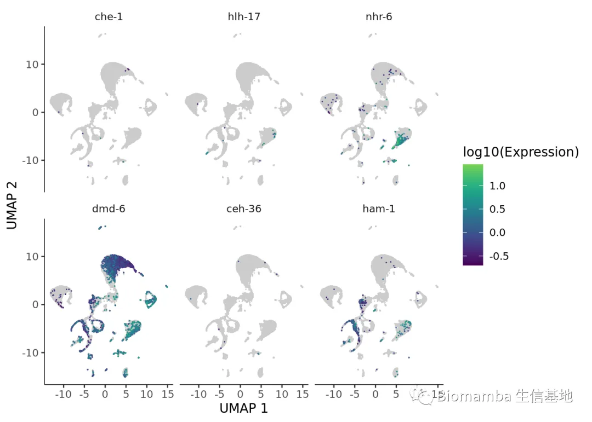
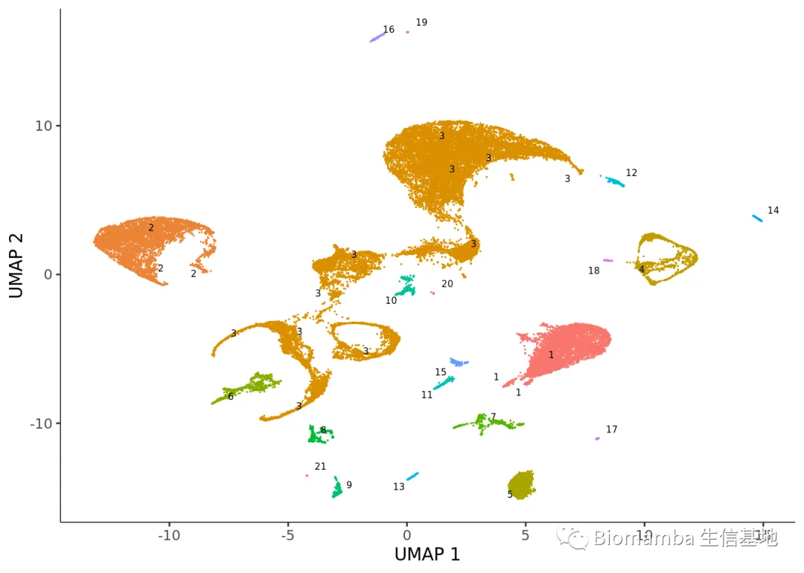
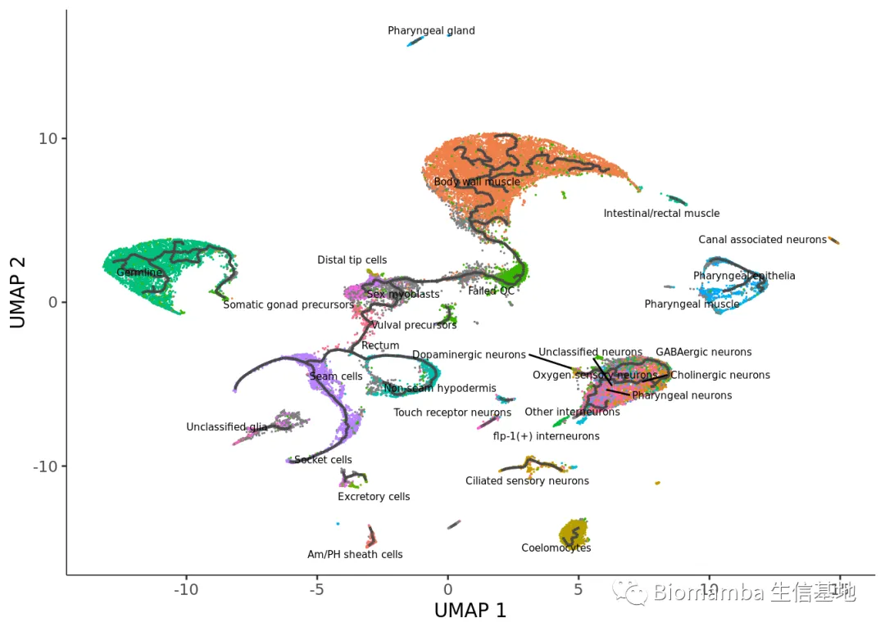
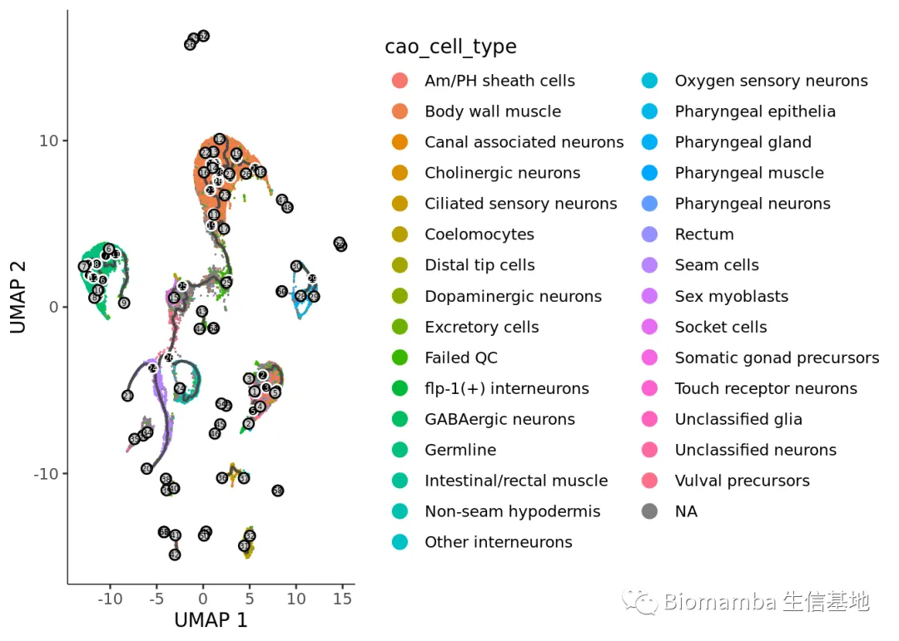
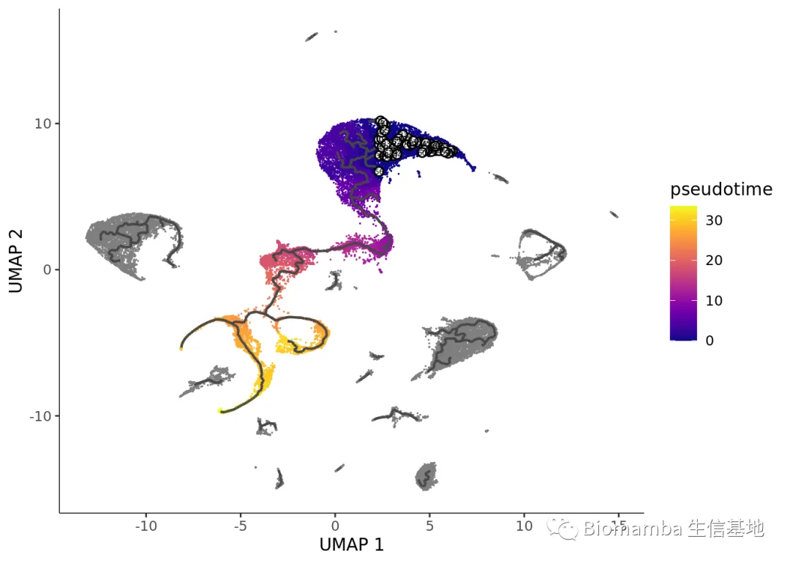
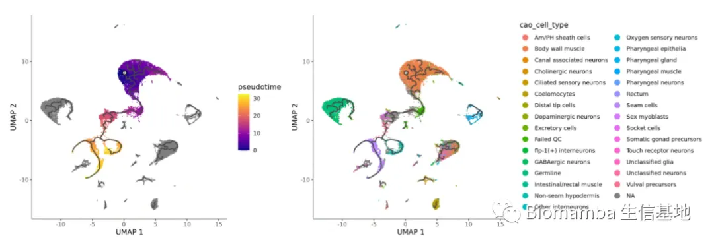
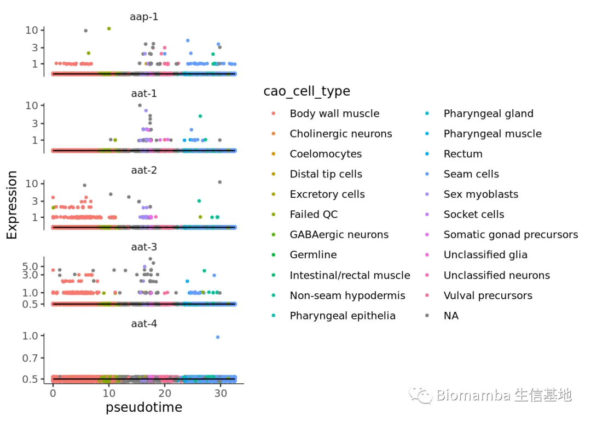
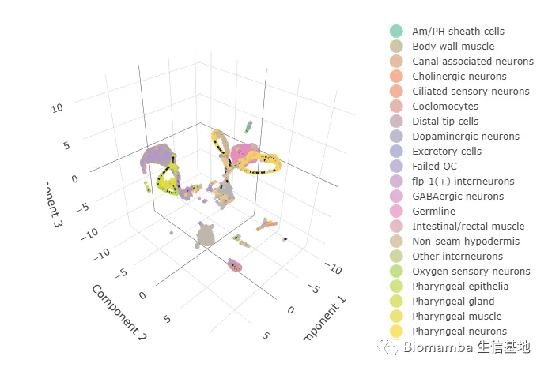

《拟时序分析》6.monocle3的拟时序分析
原文：https://mp.weixin.qq.com/s?__biz=MzAwMzIzOTk5OQ==&mid=2247490418&idx=1&sn=18ae0b6139fe1a2436dcf6cc47850297&chksm=9b3f6222ac48eb3450de0b02a34eb5fff2db89ab8f155460d554cbb23be0cd27fd349079e7b2#rd 合集：单细胞教程全收录

经过前两次课程的讲解，我们不断的将monocle3与monocle2、Seurat进行对比，相信大家已经能熟练掌握monocle3的语法与功能(《拟时序分析》5.monocle3的降维、分群、聚类)。
视频中提到的Rmakdown已经初步完工，现在的html文件中不仅包括推送的超链接、可交互的代码，甚至还插入了视频，可以帮助大家完成一站式的学习，我们先把monocle3的所有测试文件与代码放在这个链接中，单细胞拟时序系列课程 会继续更新，请大家持续关注：
代码及测试文件链接：https://pan.baidu.com/s/16lPDInnenycR9sTcABolSg?pwd=tdp7

视频教程 已上传至B站，新做了一个片头，欢迎大家来三联： https://www.bilibili.com/video/BV1br4y1x7Hf?p=10
图文教程
在我看来monocle3与monocle2最大的特点无非就是这俩：
1、可以交互式地 选择拟时序的起点
2、可以采取3D 的形式展示轨迹图
3.1.预处理数据
rm(list = ls());gc()#清除镜像重来
## used (Mb) gc trigger (Mb) max used (Mb)
## Ncells 11383036 608.0 27726538 1480.8 27726538 1480.8
## Vcells 21313689 162.7 65077689 496.6 198600815 1515.3
#老一套、读入并创建cds对象expression_matrix <- readRDS('author.pro/expression_matrix.rds')cell_metadata <- readRDS('author.pro/cell_metadata.rds')gene_annotation <- readRDS('author.pro/gene_annotation.rds')cds <- new_cell_data_set(expression_matrix, cell_metadata = cell_metadata, gene_metadata = gene_annotation)cds <- preprocess_cds(cds, num_dim = 50)#预处理cds <- align_cds(cds, alignment_group = "plate", residual_model_formula_str = '~Size_Factor')
residual_model_formula_str可以指定连续变量 进行去批次，例如某一基因/基因集的表达值，否则这些变量以分类变量的形式参与去批次会将每一个值 视为一个批次 从而产生极大的冗余计算量
降维、聚类
cds <- reduce_dimension(cds)
## No preprocess_method specified, and aligned coordinates have been computed previously. Using preprocess_method = 'Aligned'
plot_cells(cds, label_groups_by_cluster=FALSE, color_cells_by = "cao_cell_type")
## No trajectory to plot. Has learn_graph() been called yet?
## Warning: Removed 1 rows containing missing values (geom_text_repel).

#再次演示一下monocle版的Seurat::FeaturePlot()ciliated_genes <- c("che-1", "hlh-17", "nhr-6", "dmd-6", "ceh-36", "ham-1")plot_cells(cds, genes=ciliated_genes, label_cell_groups=FALSE, show_trajectory_graph=FALSE)
## Warning: `guides(<scale> = FALSE)` is deprecated. Please use `guides(<scale> =
## "none")` instead.

#感觉这个配色很丑，但是又没有参数去修改
我们monocle2那里谈过，虽然从计算学的角度来说细胞可以连续地从一种状态过渡到下一种状态，它们之间没有离散的边界，但从生物学上来说并不是所有细胞类型之间都能发生转化，所以Monocle3并不假设数据集中的所有细胞都来自一个共同的转录“祖先”，大家实际拿到的数据中可能有多个不同的轨迹。例如，在应对感染的组织中，组织常驻免疫细胞和基质细胞会有非常不同的初始转录组，对感染的反应也会非常不同，所以它们应该分属于不用的轨迹。因此，monocle3在进行拟时序分析时并不采取单起点 的方式。
cds <- cluster_cells(cds)#聚类之后，每一个cluster会自成一个”拟时序轨迹“plot_cells(cds, color_cells_by = "partition")

这个图里黑色的线就是拟时序走向的背景，带有数字的灰色圈圈代表的是拟时序分支的leaf ，他们被黑色的branch_points 所隔开
3.2.拟时序分析
cds <- learn_graph(cds)#对每个cluster进行主成分分析，这步以后拟时序图谱就已经初步产生了
plot_cells(cds, color_cells_by = "cao_cell_type", label_groups_by_cluster=FALSE, label_leaves=FALSE, label_branch_points=FALSE)
## Warning: Removed 1 rows containing missing values (geom_text_repel).

#轨迹过多，稍微有点让人不适，还是建议大家在Seurat中处理好了之后拿一些特定的细胞类型来做拟时序分析plot_cells(cds, color_cells_by = "cao_cell_type", label_cell_groups=FALSE, label_leaves=TRUE,#展示分支 label_branch_points=TRUE,#展示分支节点 graph_label_size=1.5)

cds <- order_cells(cds)
plot_cells(cds, color_cells_by = "pseudotime", label_cell_groups=FALSE, label_leaves=FALSE, label_branch_points=FALSE, graph_label_size=1.5)

我们可以看到这个图中有许多灰色的点，这是因为这些单独的轨迹没有被选择root，所以产生了无效的 拟时间值，也就是说，如果手动选择，那么每个拟时序的轨迹都需要选择一次root
说实话这个自动弹出交互式窗口的功能让我在写Rmarkdown的时候很抓狂，这个带有交互功能函数目前没法写在html文件中，所以，在我研读了一下源码之后，通过以下这种方式可以编程性 选择拟时序的root，下面这个函数会选择最接近你选择细胞的节点作为拟时序的root
names(colData(cds))
## [1] "plate" "cao_cluster" "cao_cell_type" "cao_tissue"
## [5] "Size_Factor"
colData(cds)[,'cao_cell_type'] %>% unique()
## [1] "Unclassified neurons" "Germline"
## [3] "Intestinal/rectal muscle" "Vulval precursors"
## [5] "Coelomocytes" NA
## [7] "Ciliated sensory neurons" "Failed QC"
## [9] "Seam cells" "Non-seam hypodermis"
## [11] "Pharyngeal epithelia" "Touch receptor neurons"
## [13] "Body wall muscle" "Cholinergic neurons"
## [15] "Distal tip cells" "Other interneurons"
## [17] "GABAergic neurons" "Am/PH sheath cells"
## [19] "Pharyngeal muscle" "Pharyngeal neurons"
## [21] "Oxygen sensory neurons" "Somatic gonad precursors"
## [23] "flp-1(+) interneurons" "Canal associated neurons"
## [25] "Unclassified glia" "Pharyngeal gland"
## [27] "Sex myoblasts" "Excretory cells"
## [29] "Dopaminergic neurons" "Socket cells"
## [31] "Rectum"
colData(cds)[,'cao_cell_type'] %>% table()
## .
## Am/PH sheath cells Body wall muscle Canal associated neurons
## 421 10508 239
## Cholinergic neurons Ciliated sensory neurons Coelomocytes
## 1015 842 1358
## Distal tip cells Dopaminergic neurons Excretory cells
## 129 70 155
## Failed QC flp-1(+) interneurons GABAergic neurons
## 3483 224 400
## Germline Intestinal/rectal muscle Non-seam hypodermis
## 5144 338 1268
## Other interneurons Oxygen sensory neurons Pharyngeal epithelia
## 443 305 747
## Pharyngeal gland Pharyngeal muscle Pharyngeal neurons
## 271 332 314
## Rectum Seam cells Sex myoblasts
## 121 3523 302
## Socket cells Somatic gonad precursors Touch receptor neurons
## 358 355 334
## Unclassified glia Unclassified neurons Vulval precursors
## 208 2639 488
get_earliest_principal_node <- function(cds, my_select="Am/PH sheath cells"){ cell_ids <- which(colData(cds)[, "cao_cell_type"] == my_select) closest_vertex <- cds@principal_graph_aux[["UMAP"]]$pr_graph_cell_proj_closest_vertex closest_vertex <- as.matrix(closest_vertex[colnames(cds), ]) root_pr_nodes <- igraph::V(principal_graph(cds)[["UMAP"]])$name[as.numeric(names (which.max(table(closest_vertex[cell_ids,]))))] root_pr_nodes}cds <- order_cells(cds, root_pr_nodes=get_earliest_principal_node(cds))myselect <- function(cds,select.classify,my_select){ cell_ids <- which(colData(cds)[,select.classify] == my_select) closest_vertex <- cds@principal_graph_aux[["UMAP"]]$pr_graph_cell_proj_closest_vertex closest_vertex <- as.matrix(closest_vertex[colnames(cds), ]) root_pr_nodes <- igraph::V(principal_graph(cds)[["UMAP"]])$name[as.numeric(names (which.max(table(closest_vertex[cell_ids,]))))] root_pr_nodes}cds <- order_cells(cds, root_pr_nodes=myselect(cds,select.classify = 'cao_cell_type', my_select = "Body wall muscle") )#没问题，行得通
下图可以看的出来，我们制定了”Body wall muscle”为起点后，这群细胞便是紫色 的”零值”
plot_cells(cds, color_cells_by = "pseudotime", label_cell_groups=FALSE, label_leaves=FALSE, label_branch_points=FALSE, graph_label_size=1.5)|plot_cells(cds, color_cells_by = "cao_cell_type", label_cell_groups=FALSE, label_leaves=FALSE, label_branch_points=FALSE, graph_label_size=1.5)

拟时序中的基因展示
plot_genes_in_pseudotime(cds[1:5,], color_cells_by="cao_cell_type", min_expr=0.5)

还有3D 版的拟时序，来试试吧
cds_3d <- reduce_dimension(cds, max_components = 3)
## No preprocess_method specified, and aligned coordinates have been computed previously. Using preprocess_method = 'Aligned'
cds_3d <- cluster_cells(cds_3d)
cds_3d <- learn_graph(cds_3d)
## Warning in igraph::graph.dfs(stree_ori, root = root_cell, neimode = "all", :
## Argument `neimode' is deprecated; use `mode' instead
## Warning in igraph::graph.dfs(stree_ori, root = root_cell, neimode = "all", :
## Argument `neimode' is deprecated; use `mode' instead
## Warning in igraph::graph.dfs(stree_ori, root = root_cell, neimode = "all", :
## Argument `neimode' is deprecated; use `mode' instead
## Warning in igraph::graph.dfs(stree_ori, root = root_cell, neimode = "all", :
## Argument `neimode' is deprecated; use `mode' instead
## Warning in igraph::graph.dfs(stree_ori, root = root_cell, neimode = "all", :
## Argument `neimode' is deprecated; use `mode' instead
## Warning in igraph::graph.dfs(stree_ori, root = root_cell, neimode = "all", :
## Argument `neimode' is deprecated; use `mode' instead
## Warning in igraph::graph.dfs(stree_ori, root = root_cell, neimode = "all", :
## Argument `neimode' is deprecated; use `mode' instead
## Warning in igraph::graph.dfs(stree_ori, root = root_cell, neimode = "all", :
## Argument `neimode' is deprecated; use `mode' instead
## Warning in igraph::graph.dfs(stree_ori, root = root_cell, neimode = "all", :
## Argument `neimode' is deprecated; use `mode' instead
## Warning in igraph::graph.dfs(stree_ori, root = root_cell, neimode = "all", :
## Argument `neimode' is deprecated; use `mode' instead
## Warning in igraph::graph.dfs(stree_ori, root = root_cell, neimode = "all", :
## Argument `neimode' is deprecated; use `mode' instead
## Warning in igraph::graph.dfs(stree_ori, root = root_cell, neimode = "all", :
## Argument `neimode' is deprecated; use `mode' instead
## Warning in igraph::graph.dfs(stree_ori, root = root_cell, neimode = "all", :
## Argument `neimode' is deprecated; use `mode' instead
## Warning in igraph::graph.dfs(stree_ori, root = root_cell, neimode = "all", :
## Argument `neimode' is deprecated; use `mode' instead
## Warning in igraph::graph.dfs(stree_ori, root = root_cell, neimode = "all", :
## Argument `neimode' is deprecated; use `mode' instead
## Warning in igraph::graph.dfs(stree_ori, root = root_cell, neimode = "all", :
## Argument `neimode' is deprecated; use `mode' instead
## Warning in igraph::graph.dfs(stree_ori, root = root_cell, neimode = "all", :
## Argument `neimode' is deprecated; use `mode' instead
## Warning in igraph::graph.dfs(stree_ori, root = root_cell, neimode = "all", :
## Argument `neimode' is deprecated; use `mode' instead
## Warning in louvain_clustering(data, pd[row.names(data), ], k = k, weight = weight, : RANN counts the point itself, k must be smaller than
## the total number of points - 1 (all other points) - 1 (itself)!
## Warning in igraph::graph.dfs(stree_ori, root = root_cell, neimode = "all", :
## Argument `neimode' is deprecated; use `mode' instead
cds <- order_cells(cds, root_pr_nodes=myselect(cds,select.classify = 'cao_cell_type', my_select = "Body wall muscle") )cds_3d_plot_obj <- plot_cells_3d(cds_3d, color_cells_by="cao_cell_type")
## Warning in RColorBrewer::brewer.pal(N, "Set2"): n too large, allowed maximum for palette Set2 is 8
## Returning the palette you asked for with that many colors
#遗憾的是这个函数不能通过拟时间染色
cds_3d_plot_obj

往期回顾：
单细胞数据分析系列教程：
B站视频，先看一遍视频再去看推送操作，建议至少看三遍：https://www.bilibili.com/video/BV1S44y1b76Z/ 单细胞测序基础数据分析保姆级教程，代码部分整理在往期推送之中：手把手教你做单细胞测序数据分析（一）——绪论 手把手教你做单细胞测序数据分析（二）——各类输入文件读取 手把手教你做单细胞测序数据分析（三）——单样本分析 手把手教你做单细胞测序数据分析（四）——多样本整合手把手教你做单细胞测序数据分析（五）——细胞类型注释 手把手教你做单细胞测序数据分析（六）——组间差异分析及可视化手把手教你做单细胞测序数据分析（七）——基因集富集分析
上游fastq文件处理： 单细胞分析的最上游——处理Fastq文件：cellranger 单细胞分析的最上游——处理Fastq文件：dropseqRunner有奖提问,这个smart-Seq2数据实战的比对率为何如此低？
细胞通讯B站连续播放起来比较方便： https://www.bilibili.com/video/BV1Ab4y1W7qx?p=1往期推送 单细胞测序数据进阶分析—《细胞通讯》1.概论 单细胞测序数据进阶分析—《细胞通讯》2.1CellChat基础分析教程 单细胞测序数据进阶分析—《细胞通讯》2.2CellChat多组别分析 给你们申请到了免费的128GB云服务器 拟时序分析B站连续播放起来比较方便： https://www.bilibili.com/video/BV1br4y1x7Hf?p=1往期推送 单细胞测序数据进阶分析—《拟时序分析》1.概论 单细胞测序数据进阶分析—《拟时序分析》2.monocle概论单细胞测序数据进阶分析—《拟时序分析》3.monocle2实操：完整版 单细胞测序数据进阶分析—《拟时序分析》4.初识monocle3 单细胞测序数据进阶分析—《拟时序分析》5.monocle3的降维、分群、聚类 其他单细胞相关技术贴也在这里：细胞的数量由誰决定？单细胞中应该如何做GSVA？答读者问（三）：单细胞测序前景答读者问（四）：如何分析细胞亚群答读者问（六）：Seurat中如何让细胞听你指挥答读者问（八）：为什么Read10X也会报错? 答读者问（十）整合后的表达矩阵，如何拆分出分组信息？ 答读者问（十一）如何一次性读取一个目录下的cellranger输出文件？ 给你安排一个懂生信的工具人（十）：不学编程 零代码完成单细胞测序数据分析：Loupe Browser 什么？不做单细胞也能分析细胞类群和免疫浸润？ 答读者问 （十三）查看Seurat对象时的ERROR：type='text' 各类单细胞对象（数据格式）转换大全（一）批量整理好GEO中下载的单细胞数据 答读者问 （十四）Seurat中分类变量处理技巧 答读者问 （十五）稀疏矩阵转matrix, as.matrix函数是下下策 答读者问 （十六）做单细胞测序到底需要多少内存答读者问 （十七）调用的线程越多就算的越快嘛? 答读者问（十八）、一个我至少被问过30遍的monocle报错
单细胞文献阅读：文献阅读（三）、单细胞测序解析糖尿病肾病中肾小球的动态变化 文献阅读（四）、单细胞测序技术解析健康人与T2D患者的胰岛差异文献阅读（六）、小鼠全肾单细胞测序开篇之作文献阅读（七）、一篇不花钱就能白嫖的文章文献阅读（八）、不会吧不会吧，Nature都能白嫖？文献阅读（十一）、高氧下小鼠肺发育损伤的ScRNA图谱文献阅读（十二）、IgAN & STRT-Seq 文献阅读（十三）、老树开新花——EGFR、肿瘤、免疫+scRNA-Seq 文献阅读（十五）、癌前基质细胞驱动BRCA1肿瘤发生文献阅读（十八）、紧跟生信"钱"沿,胰腺癌&免疫多模态图谱 文献阅读（十九）、原发头颈癌和肿瘤转移微生态 Biomamba助推的第二篇文章!发表了！
非技术帖：关于单细胞的事 谈谈后面的计划趁机预告一波有关提高"Biomamba 生信基地"运行效率事宜 生信分析为什么要使用服务器？

如何联系我们
 公众号后台中消息更新不及时，超过48h后便不允许回复读者消息，这里给大家留一下领取资料、咨询服务器的微信号 ，方便大家随时交流、提建议（由助理接待）。此外呼声一直很高的交流群也建好了，欢迎大家入群讨论：你们要的微信、交流群，来了！
大家可以阅读完这几篇之后添加笑一笑也就算了如何搜索公众号过往发布内容
公众号后台中消息更新不及时，超过48h后便不允许回复读者消息，这里给大家留一下领取资料、咨询服务器的微信号 ，方便大家随时交流、提建议（由助理接待）。此外呼声一直很高的交流群也建好了，欢迎大家入群讨论：你们要的微信、交流群，来了！
大家可以阅读完这几篇之后添加笑一笑也就算了如何搜索公众号过往发布内容